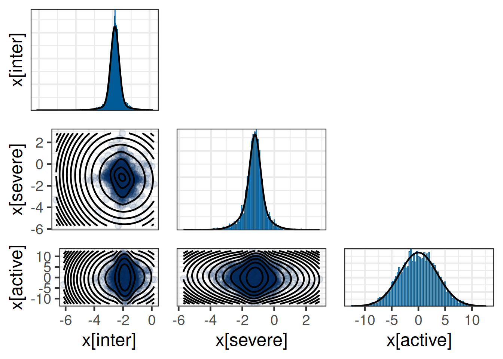
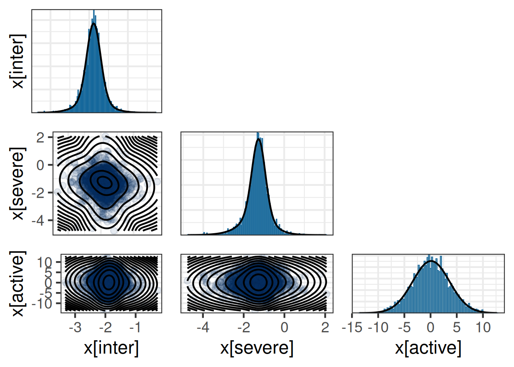
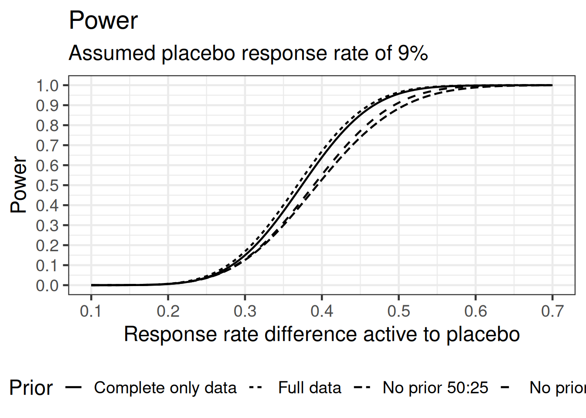

library(ggplot2)
library(dplyr)
library(tidyr)
library(brms)
library(posterior)
library(bayesplot)
library(RBesT)
here::i_am("src/02ad_meta_analysis_covariate.qmd")
library(gt)
theme_set(theme_bw(12))
# instruct brms to use cmdstanr as backend and cache all Stan binaries
options(brms.backend="cmdstanr", cmdstanr_write_stan_file_dir=here::here("_brms-cache"))
# create cache directory if not yet available
dir.create(here::here("_brms-cache"), FALSE)
set.seed(57339)
# allow for wider and prettier printing
options(width=140, digits=2)
# make brms less verbose
options(brms.short_summary = TRUE)7 Use of historical control data with a covariate
The use of baseline covariates for trial analysis is frequently applied in practice whenever known prognostic factors are relevant in the context of the study population. This can complicate the use of historical control information in particular for a non-normal endpoint for which the respective generalized linear models are often not collapsible. This case study demonstrates
- setting up a bi-variate meta-analysis for a binary endpoint to borrow information on the intercept and a baseline covariate effect from historical data
- how we can make use of incomplete responder data as one often encounters in practice (responder data not given for each level of a categorical covariate)
- how two different likelihoods can be used with custom Stan code adapting the
brmsgenerated Stan model - how to summarize with a multi-variate normal mixture the MAP prior with covariates
- how to use the multi-variate normal mixture MAP prior as a prior for the main analysis using
brms
To run the R code of this section please ensure to load these libraries and options first:
7.1 Background
Atopic dermatitis (AD) is an inflammation of the skin. It’s prevalence is substantial in the population and various treatments have been studied to date. Therefore, a substantial amount of data has been generated to date on experimental treatments for AD and along with it on placebo treated patient data. Given that treatment procedures are well standardized the historical data on placebo treatments is relevant for future trials in the indication.
One of the standard clinical endpoints is the investigator global assessment (IGA) score which ranges from 0 (clear) to 4 (severe). Changes in this score over a time-span of 16 weeks compared to baseline when treatment is initiated is used to evaluate the efficacy of treatments. Derived from the IGA score one often considers the binary IGA response status defined as an improvement of at least 2 points and reaching either 0 or 1 (clear or almost clear) IGA score. By construction of the score the initial status at baseline being moderate or severe is a prognostic factor for reaching IGA response by week 16 or not as it is harder to reach response whenever one has baseline score 4 (severe) at baseline in comparison to score 3 (moderate).
As a consequence, patients are often stratified by baseline response score into moderate and severe for trials studying this population. While most trials report the baseline distribution of the number of moderate and severe patients, only a fraction of trials report the outcome responder data stratified by baseline response data, which is a complication for using this historical data whenever one wishes to leverage the historical data.
In the following we illustrate how an informative MAP prior is derived in such a situation. Historical data on a placebo treatment for use in a future trial is used as we are aiming to reduce the required sample size in the placebo arm while maintaining appropiate power to detect a treatment effect in a two arm trial.
7.2 Data
We consider the planning stage of a potential new trial in the indication of AD. Let’s assume that an initial search for relevant historical control data in the literature lead to the following set of identified historical trials:
| study | compound | trial | start_time | n | n_severe | r_ovrall | r_mod | r_severe | oral | is_complete | |
|---|---|---|---|---|---|---|---|---|---|---|---|
| 1 | Duplmb | 2b | 2013 May | 61 | 29 | 1 | — | — | 0 | 1 | |
| 2 | Duplmb | SOLO 1 | 2014 Oct | 224 | 111 | 23 | 16 | 7 | 0 | 0 | |
| 3 | Duplmb | SOLO 2 | 2014 Dec | 236 | 115 | 20 | 17 | 3 | 0 | 0 | |
| 4 | Trlknm | ECZTRA 1 | 2017 May | 197 | 102 | 14 | 10 | 4 | 0 | 0 | |
| 5 | Trlknm | ECZTRA 2 | 2017 Jun | 193 | 100 | 18 | 13 | 5 | 0 | 0 | |
| 6 | Rctnlm | 2b | 2018 | 57 | 26 | 1 | — | — | 0 | 1 | |
| 7 | Lbrkzm | D | 2018 Jan | 52 | 20 | 8 | — | — | 0 | 1 | |
| 8 | Lbrkzm | ADvocate1 | 2019 | 141 | 58 | 18 | — | — | 0 | 1 | |
| 9 | Lbrkzm | ADvocate2 | 2019 | 146 | 51 | 16 | — | — | 0 | 1 | |
| 10 | Amltlm | 2a | 2018 Dec | 24 | 15 | 2 | — | — | 0 | 1 | |
| 11 | Updctn | 2 | 2016 | 41 | 23 | 1 | — | — | 1 | 1 | |
| 12 | Updctn | Measure Up 1 | 2018 | 281 | 125 | 24 | — | — | 1 | 1 | |
| 13 | Updctn | Measure Up 2 | 2018 | 278 | 153 | 13 | — | — | 1 | 1 | |
| 14 | Abrctn | 2b | 2016 | 52 | 20 | 3 | — | — | 1 | 1 | |
| 15 | Abrctn | JADE MONO 2 | 2017 | 78 | 26 | 7 | 6 | 1 | 1 | 0 | |
| 16 | Abrctn | JADE MONO 1 | 2018 | 77 | 31 | 6 | 5 | 1 | 1 | 0 | |
| 17 | Brctnb | BREEZE-AD1 | 2017 | 249 | 105 | 12 | — | — | 1 | 1 | |
| 18 | Brctnb | BREEZE-AD2 | 2018 | 244 | 121 | 11 | — | — | 1 | 1 | |
| min | — | — | — | — | 24.0 | 15.0 | 1.0 | 5.0 | 1.0 | 0.0% | 0.0% |
| max | — | — | — | — | 281.0 | 153.0 | 24.0 | 17.0 | 7.0 | 100.0% | 100.0% |
| avg | — | — | — | — | 146.2 | 68.4 | 11.0 | 11.2 | 3.5 | 44.4% | 66.7% |
A graphical overview of the data as a forest plot showing the historical responder data in separate for moderate and severe (when available) and as overall number of responders:

7.3 Model description
7.3.1 Trial analysis model
The aim is to decrease the sample size of the placebo arm in a future placebo controlled trial. To start, we first define the analysis model used for the future trial. We assume that the trial enrolls patients with either an IGA score of 3 (moderate) or 4 (severe). The baseline severity is a clinically relevant prognostic factor for response. Therefore, we assume that the trial analysis accounts for a patient’s disease status at baseline via an indicator severe resulting in the analysis model of the binary IGA responder outcome as
r_i|\theta_i \sim \text{Bernoulli}(\theta_i)
\text{logit}(\theta_i) = \alpha_0 + I(\text{severe}_i) \, \beta_1 + I(\text{active}_i) \, \beta_2 .
Our goal is not to derive from the historical data above informative priors for the overall intercept \alpha_0 and the covariate effect due to baseline disease status \beta_1.
7.3.2 Historical control data synthesis
Aggregate historical data necessitates adapting the trial analysis model in several ways. First, the Bernoulli likelihood for each individual patient i is transferred to an equivalent Binomial likelihood. Additionally, since each patient is classified as either moderate (l = 0) or severe (l = 1), it becomes necessary to introduce a pair of Binomial likelihood terms for each historical study (h), with one term corresponding to each baseline disease severity level.
Furthermore, the inclusion of the covariate effect for baseline severity requires deriving a MAP prior for both the intercept and the log odds ratio of the covariate effect. If only a MAP prior were derived for the intercept while assigning a non-informative prior to the covariate effect, the trial analysis would borrow information exclusively for the disease severity level linked to the reference category of the intercept, leaving the covariate effect uninformative.
To address this, the trial analysis model is extended by incorporating a hierarchical structure. This hierarchical model assigns trial-specific intercepts and slopes for the covariate effect, with these parameters being related across trials through an exchangeability assumption. This assumption enables partial pooling of the available data, allowing the model to share information across trials while also capturing trial-specific variability.
r_{h,l}|\theta_{h,l} \sim \text{Binomial}(\theta_{h,l})
\text{logit}(\theta_{h,l}) = \beta_{0,h} + I(\text{severe}_{h,l}) \, \beta_{1,h} + I(\text{oral}_{h}) \, \beta_3
with the usual between-trial heterogeneity on the intercept and the slope:
(\beta_{0,h}, \beta_{1,h})|\mu_0,\mu_1,\tau_0,\tau_1,\rho \sim \text{Normal}((\mu_0, \mu_1), \Sigma)
\Sigma = \begin{pmatrix} \tau_0^2 & \tau_0 \, \tau_1 \, \rho \\ \tau_0 \, \tau_1 \, \rho & \tau_1^2 \end{pmatrix}
However, this model requires for each historical trial the outcome of the responders to be given for each baseline disease severity level separatley (corresponding to trials marked with “complete” information). Thus, this model can only be applied in this form to a subset of the data with complete information.
7.3.3 Modelling explicitly the sum of two binomials (advanced)
For a number of trials we do not have reported the complete information needed for the above model. The complete response information per trial includes the number of responders stratified by disease severity,
- r_{h,l=0} responders with moderate baseline status
- r_{h,l=1} responders with severe baseline status.
However, we have instead reported the partial information reported of the overall number of responders, which equals the sum of the two random variables abvove:
r_h = r_{h,l=0} + r_{h,l=1}
In the following we describe how we can use the information on the sum while we model the data as if we were given the stratified response data. That is, we formulate the likelihood on the basis of the given sum of responders r_h while using the latent response rates \theta_{h,l=0} and \theta_{h,l=1} for which the model for the complete data is
r_{h,l=0}|\theta_{h,l=0} \sim \text{Binomial}(\theta_{h,l=0}) r_{h,l=1}|\theta_{h,l=1} \sim \text{Binomial}(\theta_{h,l=1})
The sum of two Binomial variables is distributed as the discrete convolution of the individual Binomial distribution:
P(Y=r) = \sum_{y_1=0}^{r} P_1(y_1) \, P_2(r - y_1)
Accounting for the fact that each variable is bounded by n_1 and n_2 respectivley, we can limit the domain of the sum accordingly:
P(Y=r) = \sum_{y_1=\max(0,r-n_2)}^{\min(n_1, r)} P_1(y_1) \, P_2(r - y_1)
7.4 Implementation
7.4.1 MAP prior for complete historical data only
Modelling jointly the complete and partial information from the historical trials requires two types of likelihoods in a single model depending on the respective case. Here we first model the historical trials with complete information only. This can be formulated as a hierarchical Binomial regression problem. Thus, we first subset to the 6 trials for which complete information is available, which we reformat into a long format for which each trial contributes one row for the moderate and one row for the severe outcome:
| study | compound | trial | severe | oral | r | n |
|---|---|---|---|---|---|---|
| 2 | Dupilumab | SOLO 1 | 0 | 0 | 16 | 113 |
| 2 | Dupilumab | SOLO 1 | 1 | 0 | 7 | 111 |
| 3 | Dupilumab | SOLO 2 | 0 | 0 | 17 | 121 |
| 3 | Dupilumab | SOLO 2 | 1 | 0 | 3 | 115 |
| 4 | Tralokinumab | ECZTRA 1 | 0 | 0 | 10 | 95 |
| 4 | Tralokinumab | ECZTRA 1 | 1 | 0 | 4 | 102 |
| 5 | Tralokinumab | ECZTRA 2 | 0 | 0 | 13 | 93 |
| 5 | Tralokinumab | ECZTRA 2 | 1 | 0 | 5 | 100 |
| 15 | Abrocitinib | JADE MONO 2 | 0 | 1 | 6 | 52 |
| 15 | Abrocitinib | JADE MONO 2 | 1 | 1 | 1 | 26 |
| 16 | Abrocitinib | JADE MONO 1 | 0 | 1 | 5 | 46 |
| 16 | Abrocitinib | JADE MONO 1 | 1 | 1 | 1 | 31 |
In this form, the data can be directly modelled with weakly-informative priors in brms. The priors are set on the basis of the unit information standard deviation. This derives from the overall mean response rate of 7%, for which the respective binomial variance is transformed to the logit scale.
# bi-variate hierarchical Binomial logistic regression model
complete_model <- bf(r | trials(n) ~ 1 + severe + oral + (1 + severe | study),
family = binomial, center = FALSE)
complete_prior <- prior(normal(0, 3.5), class = b) +
prior(normal(0, 3.5 / 4), class = sd, coef = Intercept, group=study) +
prior(normal(0, 2 * 3.5 / 4), class = sd, coef = severe, group=study)
complete_mc <- brm(complete_model, data = hist_pbo_long_complete,
prior = complete_prior,
control=list(adapt_delta=0.95),
seed = 4585678,
refresh = 0)make[2]: warning: jobserver unavailable: using -j1. Add '+' to parent make rule.Start samplingRunning MCMC with 4 sequential chains...
Chain 1 finished in 0.6 seconds.
Chain 2 finished in 0.6 seconds.
Chain 3 finished in 0.6 seconds.
Chain 4 finished in 0.7 seconds.
All 4 chains finished successfully.
Mean chain execution time: 0.6 seconds.
Total execution time: 3.0 seconds.complete_mc Family: binomial
Links: mu = logit
Formula: r | trials(n) ~ 1 + severe + oral + (1 + severe | study)
Data: hist_pbo_long_complete (Number of observations: 12)
Multilevel Hyperparameters:
~study (Number of levels: 6)
Estimate Est.Error l-95% CI u-95% CI Rhat Bulk_ESS Tail_ESS
sd(Intercept) 0.20 0.18 0.01 0.65 1.00 1303 1283
sd(severe) 0.39 0.34 0.02 1.27 1.00 1950 1859
cor(Intercept,severe) -0.05 0.59 -0.97 0.93 1.00 2882 2531
Regression Coefficients:
Estimate Est.Error l-95% CI u-95% CI Rhat Bulk_ESS Tail_ESS
Intercept -1.89 0.19 -2.26 -1.52 1.00 2205 1983
severe -1.25 0.34 -1.97 -0.61 1.00 2309 1773
oral -0.23 0.38 -1.01 0.49 1.00 2959 2755The MAP prior is then derived as prediction of the parameters (intercept and slope) for a new study. However, most brms prediction functions are meant to predict new data or response means, which involves the linear predictor on the logit scale. Instead, we wish to extract the parameters themselves, which one can obtain by considering respective levels of the linear predictor:
study_new_levels <- data.frame(
r = 0,
severe = c(0, 1),
n = 1,
oral = 0,
study = "new_study"
)
# obtain posterior for severe and moderate; note that we must allow to
# sample new levels of the random effects and also specify to do so
# using the "gaussian" option (as brms would otherwise bootstrap from
# existing studies).
prior_complete_new_study <-
rvar(posterior_linpred(
complete_mc,
newdata = study_new_levels,
allow_new_levels = TRUE,
sample_new_levels = "gaussian"
))
# we get a posterior for each condition (moderate / severe) - the
# second column includes the intercept plus the covariate effect due
# to severity,
prior_complete_new_studyrvar<4000>[2] mean ± sd:
[1] -1.9 ± 0.34 -3.1 ± 0.67 # which we convert to the log odds ratio estimate
# only by subtracting the overall intercept in the first column
prior_complete_new_study[2] <- prior_complete_new_study[2] -
prior_complete_new_study[1]
# As we wish to formulate a joint prior on all model parameters of the
# trial model - including the treatment effect - a weakly-informative
# prior for the treatment effect is added to the posterior in MC form.
prior_complete_new_study <- c(
prior_complete_new_study,
active = rvar_rng(rnorm, 1, 0, 3.5, ndraws = ndraws(prior_complete_new_study))
)
names(prior_complete_new_study) <- c("inter", "severe", "active")
# now turn the MC sample of the prior into a parametric representation
# using functions from RBesT
map_prior_complete <- mixfit(
as_draws_matrix(prior_complete_new_study),
type = "mvnorm",
Nc = 3
)
map_prior_completeEM for Multivariate Normal Mixture Model
Log-Likelihood = -14806
Multivariate normal mixture
Outcome dimension: 3
Mixture Components:
comp1 comp2 comp3
w 0.587 0.258 0.155
m[x[inter]] -1.876 -1.892 -1.868
m[x[severe]] -1.217 -1.297 -1.307
m[x[active]] 0.256 -0.441 -0.078
s[x[inter]] 0.224 0.208 0.684
s[x[severe]] 0.329 0.729 1.063
s[x[active]] 3.584 3.352 3.599
rho[x[severe],x[inter]] -0.295 -0.085 -0.054
rho[x[active],x[inter]] -0.082 0.090 0.046
rho[x[active],x[severe]] 0.083 -0.057 -0.065plot(map_prior_complete)$mixpairsDiagnostic plots for mixture multivariate normal densities are experimental.
Please note that these are subject to changes in future releases.
# robustify joint prior
prior_non_inf <- mixmvnorm(c(1, 0, 0, 0, diag(c(3.5, 3.5, 3.5)^2)))
rmap_prior_complete <- mixcombine(
map_prior_complete,
prior_non_inf,
weight = c(0.8, 0.2)
)
print(rmap_prior_complete, digits = 2)Multivariate normal mixture
Outcome dimension: 3
Mixture Components:
comp1 comp2 comp3 comp1
w 0.469 0.206 0.124 0.200
m[x[inter]] -1.876 -1.892 -1.868 0.000
m[x[severe]] -1.217 -1.297 -1.307 0.000
m[x[active]] 0.256 -0.441 -0.078 0.000
s[x[inter]] 0.224 0.208 0.684 3.500
s[x[severe]] 0.329 0.729 1.063 3.500
s[x[active]] 3.584 3.352 3.599 3.500
rho[x[severe],x[inter]] -0.295 -0.085 -0.054 0.000
rho[x[active],x[inter]] -0.082 0.090 0.046 0.000
rho[x[active],x[severe]] 0.083 -0.057 -0.065 0.000# For pre-specification of the MAP prior we have to report the MAP
# prior with a finite precision in the protocol. Thereby, it is
# recommended to write the MAP prior to disk using the JSON read/write
# functions from RBesT to store the MAP prior with a defined precision
# on file in a human readable format as JSON:
map_complete_new_trial_file <- file.path(here::here(
"data",
"map_complete_new_trial_json.txt"
))
write_mix_json(
map_prior_complete,
map_complete_new_trial_file,
pretty = TRUE,
digits = 4
)Dropping EM information from mixture object before serialization.rmap_complete_new_trial_file <- file.path(here::here(
"data",
"rmap_complete_new__trial_json.txt"
))
write_mix_json(
rmap_prior_complete,
rmap_complete_new_trial_file,
pretty = TRUE,
digits = 4
)
cat(readLines(rmap_complete_new_trial_file), sep="\n"){
"meta": {
"dim": [10, 4],
"dimnames": [
["w", "m[x[inter]]", "m[x[severe]]", "m[x[active]]", "s[x[inter]]", "s[x[severe]]", "s[x[active]]", "rho[x[severe],x[inter]]", "rho[x[active],x[inter]]", "rho[x[active],x[severe]]"],
["comp1", "comp2", "comp3", "comp1"]
],
"class": ["mvnormMix", "mix"],
"link": ["identity"],
"likelihood": ["mvnormal"]
},
"comp": [
[0.4694, 0.2064, 0.1242, 0.2],
[-1.8764, -1.8915, -1.8678, 0],
[-1.2169, -1.2967, -1.3074, 0],
[0.2556, -0.4407, -0.0782, 0],
[0.2238, 0.2085, 0.6844, 3.5],
[0.3291, 0.7288, 1.0633, 3.5],
[3.584, 3.3516, 3.5986, 3.5],
[-0.2954, -0.0846, -0.0543, 0],
[-0.0818, 0.0901, 0.0463, 0],
[0.0827, -0.0574, -0.065, 0]
]
}The MAP prior used in the future trial is then the mixture prior one obtains by loading the JSON file. In case the rounding to a limited number of digits caused that the weights do not exactly sum to unity, these will then automatically be rescalled accordingly:
read_mix_json(rmap_complete_new_trial_file, rescale=TRUE)Multivariate normal mixture
Outcome dimension: 3
Mixture Components:
comp1 comp2 comp3 comp1
w 0.469 0.206 0.124 0.200
m[x[inter]] -1.876 -1.891 -1.868 0.000
m[x[severe]] -1.217 -1.297 -1.307 0.000
m[x[active]] 0.256 -0.441 -0.078 0.000
s[x[inter]] 0.224 0.208 0.684 3.500
s[x[severe]] 0.329 0.729 1.063 3.500
s[x[active]] 3.584 3.352 3.599 3.500
rho[x[severe],x[inter]] -0.295 -0.085 -0.054 0.000
rho[x[active],x[inter]] -0.082 0.090 0.046 0.000
rho[x[active],x[severe]] 0.083 -0.057 -0.065 0.0007.4.2 MAP prior for complete and partial historical data (advanced)
In the previous Section 7.4.1 the data of the partially reported trials was dropped corresponding to a subset of 1005 patients such that 1626 were left out, which is unsatisfactory. As explained in Section 7.3.3, the data from the trials with partial data can be modelled using a latent variable approach. Their likelihood contribution for the partially observed historical trials is then based on the convolution theorem and deviates from the case of a complete data historical trial.
As strategy to model this with brms we will extend the previous model from Section 7.4.1 in two ways
- include the trials with partial data such that we model their response rate by stratum in a latent manner
- add the likelihood for the partially reported data
The first point can be achived by casting all data into a long format including the partially observed trials. However, for the partially observed trial data the information is missing on the number of responses per disease severity. For these trials we state in the data to have zero responders and zero patients as
\tilde{r}_{h,l} = \begin{cases} r_{h,l} & \text{complete data} \\ 0 & \text{partial data} \\ \end{cases}
\tilde{n}_{h,l} = \begin{cases} n_{h,l} & \text{complete data} \\ 0 & \text{partial data} \\ \end{cases}
We also include a column is_complete indicating if a trial is reported as complete or partial. Moreover, a column row is included which is simply the row in the data set, which will be used below.
| study | compound | trial | severe | oral | r | n | is_complete | r_total | n_total | r_tilde | n_tilde | row | |
|---|---|---|---|---|---|---|---|---|---|---|---|---|---|
| 1 | 1 | Dupilumab | 2b | 0 | 0 | — | 32 | 0 | 1 | 61 | 0 | 0 | 1 |
| 2 | 1 | Dupilumab | 2b | 1 | 0 | — | 29 | 0 | 1 | 61 | 0 | 0 | 2 |
| 3 | 2 | Dupilumab | SOLO 1 | 0 | 0 | 16 | 113 | 1 | 23 | 224 | 16 | 113 | 3 |
| 4 | 2 | Dupilumab | SOLO 1 | 1 | 0 | 7 | 111 | 1 | 23 | 224 | 7 | 111 | 4 |
| 5 | 3 | Dupilumab | SOLO 2 | 0 | 0 | 17 | 121 | 1 | 20 | 236 | 17 | 121 | 5 |
| 6 | 3 | Dupilumab | SOLO 2 | 1 | 0 | 3 | 115 | 1 | 20 | 236 | 3 | 115 | 6 |
| 7 | 4 | Tralokinumab | ECZTRA 1 | 0 | 0 | 10 | 95 | 1 | 14 | 197 | 10 | 95 | 7 |
| 8 | 4 | Tralokinumab | ECZTRA 1 | 1 | 0 | 4 | 102 | 1 | 14 | 197 | 4 | 102 | 8 |
| 9 | 5 | Tralokinumab | ECZTRA 2 | 0 | 0 | 13 | 93 | 1 | 18 | 193 | 13 | 93 | 9 |
| 10 | 5 | Tralokinumab | ECZTRA 2 | 1 | 0 | 5 | 100 | 1 | 18 | 193 | 5 | 100 | 10 |
| 11 | 6 | Rocatinlimab | 2b | 0 | 0 | — | 31 | 0 | 1 | 57 | 0 | 0 | 11 |
| 12 | 6 | Rocatinlimab | 2b | 1 | 0 | — | 26 | 0 | 1 | 57 | 0 | 0 | 12 |
| 13..35 | |||||||||||||
| 36 | 18 | Baricitinib | BREEZE-AD2 | 1 | 1 | — | 121 | 0 | 11 | 244 | 0 | 0 | 36 |
Adding the data for the partially observed trials with responders and patients set to zero causes brms to include these trials in the model and instantiate corresponding random effects for the intercept and the slope. However, since no data is effectivley provided (zero responders and zero patients), the resulting posterior is not altered as can be seen by rerunning the previouse model with the longer data including the fake data:
# Here we reuse the previous model fit and "update" it with the longer
# data. For this to work, we need to align the column names to the
# model of the complete model fit.
update(
complete_mc,
newdata = mutate(hist_pbo_long, r = r_tilde, n = n_tilde),
control = list(adapt_delta = 0.95),
seed = 645776
)Start samplingRunning MCMC with 4 sequential chains...
Chain 1 finished in 1.1 seconds.
Chain 2 finished in 1.1 seconds.
Chain 3 finished in 1.1 seconds.
Chain 4 finished in 1.0 seconds.
All 4 chains finished successfully.
Mean chain execution time: 1.1 seconds.
Total execution time: 4.7 seconds. Family: binomial
Links: mu = logit
Formula: r | trials(n) ~ 1 + severe + oral + (1 + severe | study)
Data: mutate(hist_pbo_long, r = r_tilde, n = n_tilde) (Number of observations: 36)
Multilevel Hyperparameters:
~study (Number of levels: 18)
Estimate Est.Error l-95% CI u-95% CI Rhat Bulk_ESS Tail_ESS
sd(Intercept) 0.19 0.17 0.01 0.66 1.00 1911 1767
sd(severe) 0.38 0.34 0.01 1.26 1.00 2405 2215
cor(Intercept,severe) -0.05 0.59 -0.95 0.93 1.00 4330 2656
Regression Coefficients:
Estimate Est.Error l-95% CI u-95% CI Rhat Bulk_ESS Tail_ESS
Intercept -1.89 0.19 -2.27 -1.52 1.00 3016 2349
severe -1.23 0.34 -1.94 -0.56 1.00 3477 2311
oral -0.23 0.38 -1.01 0.50 1.00 3894 2264To now include the special likelihood term for the partially reported historical trials, we use the stanvar facilities of brms. These allow to inject custom Stan code into the model such that we may add an additional likelihood for the partially observed historical trial data. As each partially observed trial only contributes a single term to the likelihood, it is appropiate to recast the previously long format into a wide data format such that one data row corresponds to just one historical trial. In order to be able to link the wide data format with the rows from the moderate and severe rows in the long format, the column row of the long format is cast into the wide format as well:
Show the code
hist_pbo_wide <- hist_pbo_long |>
select(
study,
compound,
trial,
n_total,
is_complete,
r_total,
severe,
n,
row
) |>
pivot_wider(
id_cols = c(
"study",
"compound",
"trial",
"r_total",
"n_total",
"is_complete"
),
values_from = c("n", "row"),
names_from = "severe"
)
hist_pbo_wide |>
gt_preview(6) |>
fmt_number(decimals = 2) |>
fmt_integer() |>
sub_missing()| study | compound | trial | r_total | n_total | is_complete | n_0 | n_1 | row_0 | row_1 | |
|---|---|---|---|---|---|---|---|---|---|---|
| 1 | 1 | Dupilumab | 2b | 1 | 61 | 0 | 32 | 29 | 1 | 2 |
| 2 | 2 | Dupilumab | SOLO 1 | 23 | 224 | 1 | 113 | 111 | 3 | 4 |
| 3 | 3 | Dupilumab | SOLO 2 | 20 | 236 | 1 | 121 | 115 | 5 | 6 |
| 4 | 4 | Tralokinumab | ECZTRA 1 | 14 | 197 | 1 | 95 | 102 | 7 | 8 |
| 5 | 5 | Tralokinumab | ECZTRA 2 | 18 | 193 | 1 | 93 | 100 | 9 | 10 |
| 6 | 6 | Rocatinlimab | 2b | 1 | 57 | 0 | 31 | 26 | 11 | 12 |
| 7..17 | ||||||||||
| 18 | 18 | Baricitinib | BREEZE-AD2 | 11 | 244 | 0 | 123 | 121 | 35 | 36 |
All columns with a _0 postfix correspond to the moderate information available and _1 to the respective severe information.
Show the code
exact_binomial_sum <- ## first we define the probability density for a sum of two binomials
stanvar(
name = "binomial_sum_lpmf",
scode = "
// lpmf of the sum of two binomially distributed random variables
real binomial_logit_sum_lpmf(int y, int n1, real alpha1, int n2, real alpha2) {
// the discrete convolution here sums over all possible
// configurations which lead to a sum of y1+y2==y
int y1_min = max(0, y-n2);
int y1_max = min(n1, y);
int n_terms = y1_max - y1_min + 1;
vector[n_terms] log_prob;
for(i in y1_min:y1_max)
log_prob[i - y1_min + 1] = binomial_logit_lpmf(i | n1, alpha1) + binomial_logit_lpmf(y-i | n2, alpha2);
return log_sum_exp(log_prob);
}
",
block = "functions"
) +
stanvar(
name = "marginal_likelihood_sum",
scode = "
// likelihood on sum of Binomials (exact solution uses a discrete convolution)
for(i in 1:n_studies) {
if(is_complete[i] == 1)
continue;
target += binomial_logit_sum_lpmf(r_total[i] | n_0[i], mu[row_0[i]], n_1[i], mu[row_1[i]]);
}
",
block = "likelihood",
position = "end"
)
## needed for brms <= 2.21 and cmdstan > 2.32 to have arrays declared
## with the newer Stan syntax for arrays
stanvar_array <- function(data) {
name <- deparse(substitute(data))
n <- length(data)
if (!is.integer(data)) {
return(stanvar(data, name = name))
}
stanvar(data, name = name, scode = glue::glue("array[{n}] int {name};"))
}
model_marginal_data <- with(hist_pbo_wide, {
stanvar_array(r_total) +
stanvar_array(is_complete) +
stanvar_array(n_0) +
stanvar_array(n_1) +
stanvar_array(row_0) +
stanvar_array(row_1) +
stanvar(length(row_1), "n_studies")
})
full_model <- bf(
r_tilde | trials(n_tilde) ~ 1 + severe + oral + (1 + severe | study),
family = binomial,
center = FALSE
)
# we use the same prior as used for modelling the subset of complete
# data only
full_prior <- complete_prior
full_mc <- brm(
full_model,
data = hist_pbo_long,
prior = full_prior,
control = list(adapt_delta = 0.99),
stanvars = model_marginal_data + exact_binomial_sum,
seed = 458678,
refresh = 0
)make[2]: warning: jobserver unavailable: using -j1. Add '+' to parent make rule.Start samplingRunning MCMC with 4 sequential chains...
Chain 1 finished in 10.1 seconds.
Chain 2 finished in 7.7 seconds.
Chain 3 finished in 5.8 seconds.
Chain 4 finished in 6.4 seconds.
All 4 chains finished successfully.
Mean chain execution time: 7.5 seconds.
Total execution time: 30.4 seconds.Show the code
full_mc Family: binomial
Links: mu = logit
Formula: r_tilde | trials(n_tilde) ~ 1 + severe + oral + (1 + severe | study)
Data: hist_pbo_long (Number of observations: 36)
Multilevel Hyperparameters:
~study (Number of levels: 18)
Estimate Est.Error l-95% CI u-95% CI Rhat Bulk_ESS Tail_ESS
sd(Intercept) 0.17 0.13 0.01 0.48 1.00 1436 2105
sd(severe) 0.36 0.29 0.01 1.07 1.00 2101 2120
cor(Intercept,severe) -0.04 0.60 -0.96 0.96 1.00 3592 2574
Regression Coefficients:
Estimate Est.Error l-95% CI u-95% CI Rhat Bulk_ESS Tail_ESS
Intercept -1.90 0.14 -2.18 -1.64 1.00 2828 2496
severe -1.31 0.33 -2.00 -0.71 1.00 3491 2537
oral -0.47 0.19 -0.84 -0.07 1.00 2888 2670To see how the Stan model has been augmented with the stanvars argument above the full Stan model code can be obtained with the stancode command:
stancode(full_mc)Show full Stan model
// generated with brms 2.23.0
functions {
/* compute correlated group-level effects
* Args:
* z: matrix of unscaled group-level effects
* SD: vector of standard deviation parameters
* L: cholesky factor correlation matrix
* Returns:
* matrix of scaled group-level effects
*/
matrix scale_r_cor(matrix z, vector SD, matrix L) {
// r is stored in another dimension order than z
return transpose(diag_pre_multiply(SD, L) * z);
}
// lpmf of the sum of two binomially distributed random variables
real binomial_logit_sum_lpmf(int y, int n1, real alpha1, int n2, real alpha2) {
// the discrete convolution here sums over all possible
// configurations which lead to a sum of y1+y2==y
int y1_min = max(0, y-n2);
int y1_max = min(n1, y);
int n_terms = y1_max - y1_min + 1;
vector[n_terms] log_prob;
for(i in y1_min:y1_max)
log_prob[i - y1_min + 1] = binomial_logit_lpmf(i | n1, alpha1) + binomial_logit_lpmf(y-i | n2, alpha2);
return log_sum_exp(log_prob);
}
}
data {
int<lower=1> N; // total number of observations
array[N] int Y; // response variable
array[N] int trials; // number of trials
int<lower=1> K; // number of population-level effects
matrix[N, K] X; // population-level design matrix
// data for group-level effects of ID 1
int<lower=1> N_1; // number of grouping levels
int<lower=1> M_1; // number of coefficients per level
array[N] int<lower=1> J_1; // grouping indicator per observation
// group-level predictor values
vector[N] Z_1_1;
vector[N] Z_1_2;
int<lower=1> NC_1; // number of group-level correlations
int prior_only; // should the likelihood be ignored?
array[18] int r_total;
array[18] int is_complete;
array[18] int n_0;
array[18] int n_1;
array[18] int row_0;
array[18] int row_1;
int n_studies;
}
transformed data {
}
parameters {
vector[K] b; // regression coefficients
vector<lower=0>[M_1] sd_1; // group-level standard deviations
matrix[M_1, N_1] z_1; // standardized group-level effects
cholesky_factor_corr[M_1] L_1; // cholesky factor of correlation matrix
}
transformed parameters {
matrix[N_1, M_1] r_1; // actual group-level effects
// using vectors speeds up indexing in loops
vector[N_1] r_1_1;
vector[N_1] r_1_2;
// prior contributions to the log posterior
real lprior = 0;
// compute actual group-level effects
r_1 = scale_r_cor(z_1, sd_1, L_1);
r_1_1 = r_1[, 1];
r_1_2 = r_1[, 2];
lprior += normal_lpdf(b | 0, 3.5);
lprior += normal_lpdf(sd_1[1] | 0, 3.5/4)
- 1 * normal_lccdf(0 | 0, 3.5/4);
lprior += normal_lpdf(sd_1[2] | 0, 2 * 3.5/4)
- 1 * normal_lccdf(0 | 0, 2 * 3.5/4);
lprior += lkj_corr_cholesky_lpdf(L_1 | 1);
}
model {
// likelihood including constants
if (!prior_only) {
// initialize linear predictor term
vector[N] mu = rep_vector(0.0, N);
mu += X * b;
for (n in 1:N) {
// add more terms to the linear predictor
mu[n] += r_1_1[J_1[n]] * Z_1_1[n] + r_1_2[J_1[n]] * Z_1_2[n];
}
target += binomial_logit_lpmf(Y | trials, mu);
// likelihood on sum of Binomials (exact solution uses a discrete convolution)
for(i in 1:n_studies) {
if(is_complete[i] == 1)
continue;
target += binomial_logit_sum_lpmf(r_total[i] | n_0[i], mu[row_0[i]], n_1[i], mu[row_1[i]]);
}
}
// priors including constants
target += lprior;
target += std_normal_lpdf(to_vector(z_1));
}
generated quantities {
// compute group-level correlations
corr_matrix[M_1] Cor_1 = multiply_lower_tri_self_transpose(L_1);
vector<lower=-1,upper=1>[NC_1] cor_1;
// extract upper diagonal of correlation matrix
for (k in 1:M_1) {
for (j in 1:(k - 1)) {
cor_1[choose(k - 1, 2) + j] = Cor_1[j, k];
}
}
}Diagnostic plots for mixture multivariate normal densities are experimental.
Please note that these are subject to changes in future releases.
Multivariate normal mixture
Outcome dimension: 3
Mixture Components:
comp1 comp2 comp3 comp1
w 0.490 0.178 0.132 0.200
m[x[inter]] -1.885 -1.920 -1.882 0.000
m[x[severe]] -1.264 -1.329 -1.501 0.000
m[x[active]] 0.122 0.164 -0.076 0.000
s[x[inter]] 0.172 0.426 0.217 3.500
s[x[severe]] 0.324 0.625 0.991 3.500
s[x[active]] 3.534 3.349 3.724 3.500
rho[x[severe],x[inter]] -0.302 -0.129 -0.090 0.000
rho[x[active],x[inter]] 0.029 -0.071 0.189 0.000
rho[x[active],x[severe]] -0.019 0.033 0.031 0.000Dropping EM information from mixture object before serialization.7.5 Results
At this stage we have derived robust bi-variate MAP priors from the subset of the complete historical control data and the full historical control data. Now we proceed and illustrate how these priors compare, what operating characeristics these imply and how these priors can be used in the analysis of the future trial data.
We first load the derived robust MAP priors which are stored as JSON files. It is important to emphasize that this constitutes the information used as a prior in the new trial. That is, the previous hierarchical model for the historical data is no longer needed to analyze the future trial given that we have accuratley approximated the (robust) MAP density in parametric form.
Nonetheles, the prior must also be made available to brms as a prior density. This requires the use of RBesT mixture priors within brms. Given that these mixture priors are not known to brms per se, an adapter function is provided by RBesT, the mixstanvar adapter. Here, we illustrate it’s use by instantiating a brms model, which is used to sample from the MAP priors to characerise it’s properties.
# load pre-specified prior
rmap_prior_protocol <- read_mix_json(rmap_new_trial_file, rescale = TRUE)
rmap_prior_complete_protocol <- read_mix_json(
rmap_complete_new_trial_file,
rescale = TRUE
)
# model for trial without hierarchical structure
trial_model <- bf(r ~ 1 + severe + active, family = bernoulli, center = FALSE)
# uses as prior the multi-variate normal prior previously store on
# file
trial_model_prior <- prior(mixmvnorm(rmap_w, rmap_m, rmap_sigma_L), class = b)
# insert dummy data for the two strata on control only here
study_strata <- data.frame(
r = 0,
severe = c(0, 1),
n = 1,
active = 0,
study = "new_trial"
)
# sample prior of the model as we like to evaluate operating
# characteristics
trail_model_full_mc <- brm(
trial_model,
data = study_strata,
# this is the magic sauce from RBesT which plugs
# the multi-variate normal mixture prior into
# the brms model
prior = trial_model_prior,
stanvar = mixstanvar(rmap = rmap_prior_protocol),
sample_prior = "only",
control = list(adapt_delta = 0.95),
seed = 4585678,
refresh = 0
)make[2]: warning: jobserver unavailable: using -j1. Add '+' to parent make rule.Start samplingRunning MCMC with 4 sequential chains...
Chain 1 finished in 0.4 seconds.
Chain 2 finished in 0.5 seconds.
Chain 3 finished in 0.7 seconds.
Chain 4 finished in 0.5 seconds.
All 4 chains finished successfully.
Mean chain execution time: 0.5 seconds.
Total execution time: 2.8 seconds.trail_model_complete_mc <- brm(
trial_model,
data = study_strata,
prior = trial_model_prior,
stanvar = mixstanvar(rmap = rmap_prior_complete_protocol),
sample_prior = "only",
control = list(adapt_delta = 0.95),
seed = 4585678,
refresh = 0
)Start samplingRunning MCMC with 4 sequential chains...
Chain 1 finished in 0.3 seconds.
Chain 2 finished in 0.2 seconds.
Chain 3 finished in 0.5 seconds.
Chain 4 finished in 0.5 seconds.
All 4 chains finished successfully.
Mean chain execution time: 0.4 seconds.
Total execution time: 2.1 seconds.# obtain MC sample of trial prior on response scale
trial_prior_full_rv <- rvar(posterior_linpred(
trail_model_full_mc,
transform = TRUE
))
trial_prior_complete_rv <- rvar(posterior_linpred(
trail_model_complete_mc,
transform = TRUE
))
# on the response scale we form the expected response rate which
# respects the expected percentage of severe patients.
w_severe <- 0.45
trial_prior_full_mean_rv <- (1 - w_severe) *
trial_prior_full_rv[1] +
w_severe * trial_prior_full_rv[2]
trial_prior_complete_mean_rv <- (1 - w_severe) *
trial_prior_complete_rv[1] +
w_severe * trial_prior_complete_rv[2]
trial_prior_full_mean <- mixfit(
as_draws_matrix(trial_prior_full_mean_rv),
type = "beta",
Nc = 3
)
trial_prior_complete_mean <- mixfit(
as_draws_matrix(trial_prior_complete_mean_rv),
type = "beta",
Nc = 3
)
summary(trial_prior_full_mean) mean sd 2.5% 50.0% 97.5%
0.152 0.202 0.032 0.094 0.962 summary(trial_prior_complete_mean) mean sd 2.5% 50.0% 97.5%
0.169 0.217 0.023 0.098 0.966 These MAP priors have been derived on the response scale and are approximated using Beta mixture priors. These correspond to the marginal prior density when assuming the quoted 45% of severe patients at baseline in the future trial. In this marginal form we can use the commonly used tools to study the trial operating characeristics when using an informative MAP prior for the control group. Note that this essentially ignores the presence of a covariate, which is a commonplace simplification for trial planning and the expectation that trial power will increase due to the explicit use of the covariate.
We start by considering the effective sample size of the priors:
ess(trial_prior_full_mean)[1] 202ess(trial_prior_complete_mean)[1] 133And continue with evaluating the operating characteristics of the trial, which assume a true response rate for placebo of 9% and use as reference case a sample size of 50 per arm (100 total), which is considered for a reduction to a 2:1 ratio trial with a total of only 75 patients:
Show the code
success_crit <- decision2S(c(0.9, 0.6), c(0, 0.35), FALSE)
unif_prior <- mixbeta(c(1, 1, 1))
design_noninf_11 <- oc2S(unif_prior, unif_prior, 50, 50, success_crit)
design_noninf_21 <- oc2S(unif_prior, unif_prior, 50, 25, success_crit)
design_complete <- oc2S(
unif_prior,
trial_prior_complete_mean,
50,
25,
success_crit
)
design_full <- oc2S(unif_prior, trial_prior_full_mean, 50, 25, success_crit)
ggplot(data.frame(delta = c(0.1, 0.7)), aes(x = delta)) +
stat_function(
fun = \(x) design_full(0.09 + x, 0.09),
aes(linetype = "Full data")
) +
stat_function(
fun = \(x) design_complete(0.09 + x, 0.09),
aes(linetype = "Complete only data")
) +
stat_function(
fun = \(x) design_noninf_21(0.09 + x, 0.09),
aes(linetype = "No prior 50:25")
) +
stat_function(
fun = \(x) design_noninf_11(0.09 + x, 0.09),
aes(linetype = "No prior 50:50")
) +
scale_linetype_discrete("Prior") +
labs(title = "Power", subtitle = "Assumed placebo response rate of 9%") +
xlab("Response rate difference active to placebo") +
ylab("Power") +
scale_y_continuous(breaks = seq(0, 1, by = 0.1)) +
scale_x_continuous(breaks = seq(0, 1, by = 0.1)) +
theme(legend.position = "bottom")
The MAP priors do improve the power to detect a difference to control here. The difference between the full and complete only prior is not quite pronounced. This can also be seen by considering the critical values tabulated by a given number of responders in the placebo group:
Show the code
crit_complete <- decision2S_boundary(
unif_prior,
trial_prior_complete_mean,
50,
25,
success_crit
)
crit_full <- decision2S_boundary(
unif_prior,
trial_prior_full_mean,
50,
25,
success_crit
)
tibble(r_placebo = 0:25) |>
mutate(
min_r_active_complete = crit_complete(0:25) + 1,
min_r_active_full = crit_full(0:25) + 1,
min_obs_delta_complete = if_else(
min_r_active_complete == 0,
NA_real_,
min_r_active_complete / 50 - r_placebo / 25
),
min_obs_delta_full = if_else(
min_r_active_full == 0,
NA_real_,
min_r_active_full / 50 - r_placebo / 25
)
) |>
gt() |>
fmt_integer(c(starts_with("min_r"), starts_with("r_"))) |>
fmt_percent(starts_with("min_obs"), decimals = 0) |>
tab_spanner(
label = html("Minimal active<br>responders"),
columns = starts_with("min_r")
) |>
tab_spanner(
label = html("Minimal observed<br>difference"),
columns = starts_with("min_obs")
) |>
cols_label(
min_r_active_complete = html("Complete<br>only"),
min_r_active_full = "Full",
min_obs_delta_complete = html("Complete<br>only"),
min_obs_delta_full = "Full",
r_placebo = html("Responder<br>Placebo")
) |>
sub_missing()| Responder Placebo |
Minimal active responders |
Minimal observed difference |
||
|---|---|---|---|---|
| Complete only |
Full | Complete only |
Full | |
| 0 | 22 | 22 | 44% | 44% |
| 1 | 23 | 23 | 42% | 42% |
| 2 | 24 | 23 | 40% | 38% |
| 3 | 24 | 24 | 36% | 36% |
| 4 | 24 | 24 | 32% | 32% |
| 5 | 25 | 25 | 30% | 30% |
| 6 | 27 | 26 | 30% | 28% |
| 7 | 31 | 30 | 34% | 32% |
| 8 | 34 | 33 | 36% | 34% |
| 9 | 36 | 36 | 36% | 36% |
| 10 | 38 | 37 | 36% | 34% |
| 11 | 39 | 39 | 34% | 34% |
| 12 | 41 | 41 | 34% | 34% |
| 13 | 43 | 43 | 34% | 34% |
| 14 | 45 | 45 | 34% | 34% |
| 15 | 47 | 46 | 34% | 32% |
| 16 | 49 | 49 | 34% | 34% |
| 17 | 0 | 0 | — | — |
| 18 | 0 | 0 | — | — |
| 19 | 0 | 0 | — | — |
| 20 | 0 | 0 | — | — |
| 21 | 0 | 0 | — | — |
| 22 | 0 | 0 | — | — |
| 23 | 0 | 0 | — | — |
| 24 | 0 | 0 | — | — |
| 25 | 0 | 0 | — | — |
7.6 Conclusion
This case study demonstrates how we may use historical control data which requires the use of a baseline covariate. This complicates the derivation of a MAP prior in two ways: (i) we are then required to derive an informative MAP prior for the intercept and the slope parameters of the respective model and (ii) the information we need from the historical data may only be given in partial form. This former complication can be resolved by a latent variable approach which we marginalize for the trials with only partial information such that we can make use of the partial data as given. This illustrates how we can use two different likelihoods within the very same brms model.
We completed the case study by illustrating the operating characteristics of a potential future trial in a simplified manner by considering the marginalized response rate. These analyses showed that there is indeed a benefit to use a MAP prior in this cotext. However, the differences between using a MAP prior based on the full and complete data only priors are not marked. Still, the ability to use the full data set without further assumptions (the distribution of the Binomial sum is calculated in an exact manner) is preferable over dismissing relevant historical control data.
7.7 Exercises
Use a normal approximation instead of the exact binomial convolution for incorporating the partially reported data. Study the differences to the case of using the exact Binomial convolution.